I study how producers and organizations create novelty, how audiences recognize and evaluate it, and how it evolves and spreads across creative industries. I also study how social networks form—how strangers perceive one another, connect, and become friends.
Music, film, books and theatre. Computational methods & quasi-experimental designs.
Academy of Management Journal 2026
Spencer Harrison, Pat Reilly, Yanbo Song & Khwan Kim
When creative collaborations break down, can “creative differences” protect the people who leave? A study of reputation, professional networks and future work in Hollywood.
Read the paper
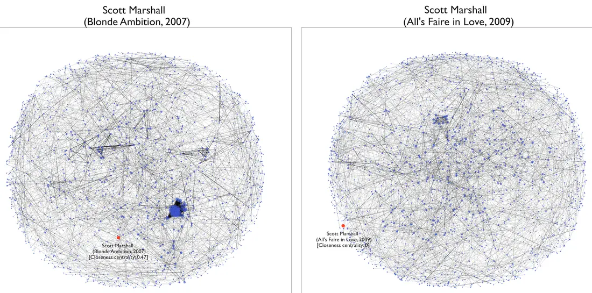
Fig. Professional networks around a director. Original
Proceedings of the National Academy of Sciences 2024 · 121(6), e2306549121
Khwan Kim , Noah Askin & James A. Evans
Changes in everyday routines are associated with musical exploration—and the music discovered during these disruptions continues to shape listening.
Finalist, Edgar Schein Best Student Paper Prize, Berkeley Culture Conference 2024. Featured in the UNDP Human Development Report 2023–24.
Read the paper
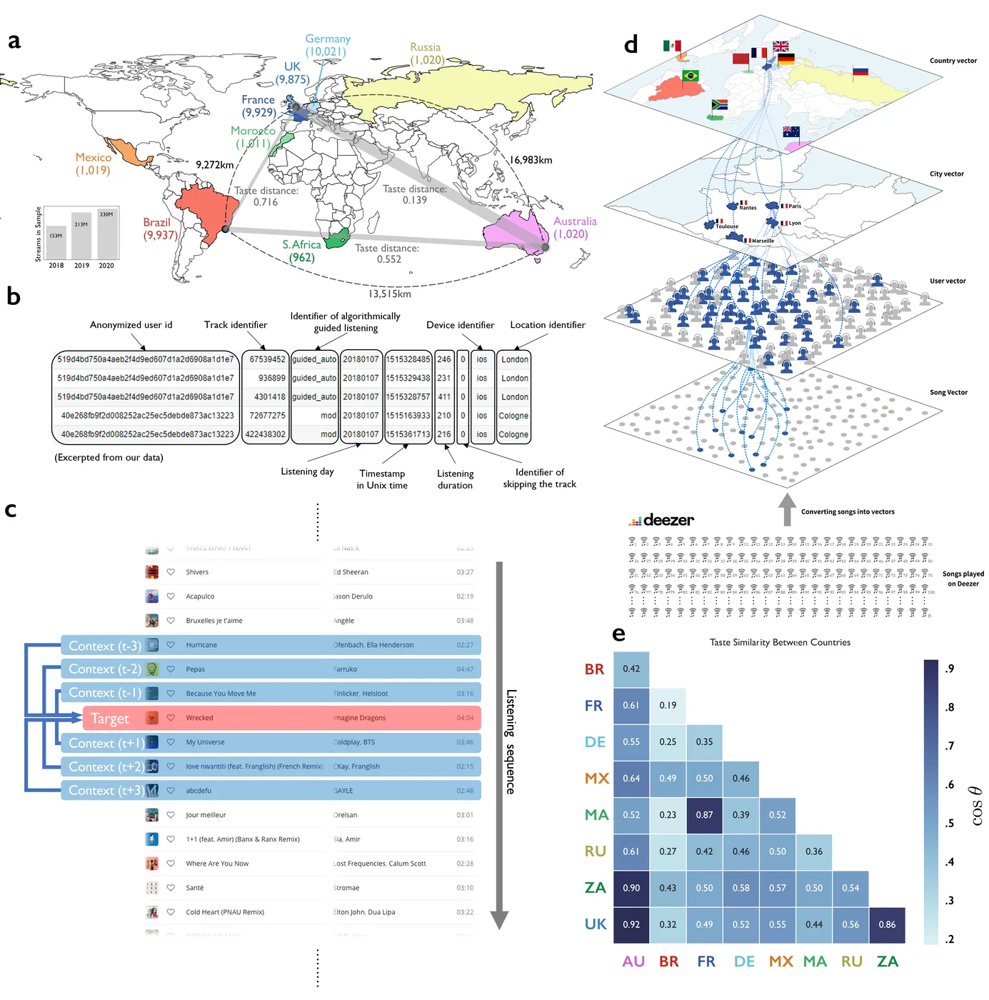
Fig. Listening locations and exploration across countries. Original
American Sociological Review 2024 · 89(3), 542–583
Khwan Kim & Noah Askin
How do sounds and lyrics create opportunities for new genres? The research connects the structure of a cultural market to the emergence of novelty.
Read the paper Interactive figure
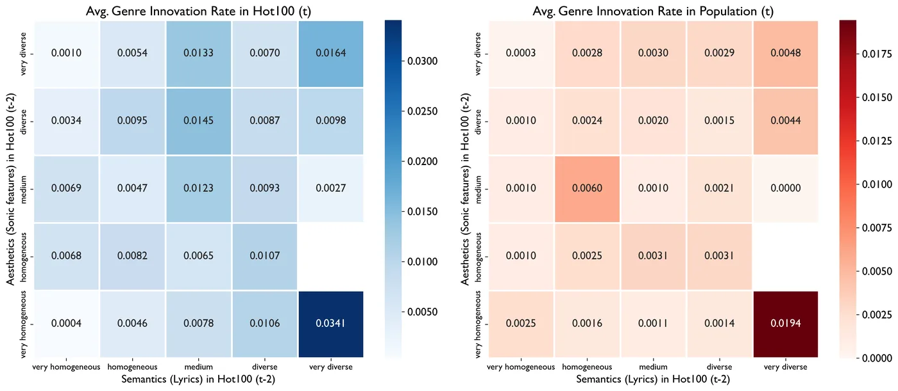
Fig. Genre innovation by sonic and lyrical diversity. Original
Working papers under review
Current projects and review statuses. SSRN versions may carry earlier titles or author lists.
Management Science Major revision
The Effect of Subscription-Only Business Models on Platform Participation
Khwan Kim , Manav Raj & Adithya Venkateswaran Authors listed alphabetically.
Platform business models and participation.
SSRN
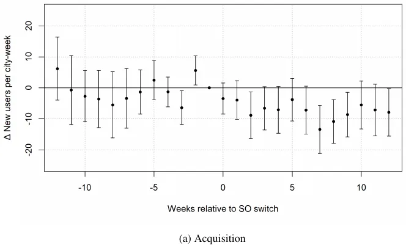
Fig. New users per city-week around the switch to subscription-only pricing. Original
Strategic Management Journal Reject & resubmit
Digitization Effects in the Book Industry
Khwan Kim & Manav Raj
Digitisation and the novelty of creative production in publishing.
Best Paper Award, Munich Summer Institute 2025. Best Student Paper Award, OMT Division, Academy of Management 2024, for an earlier solo-authored version.
SSRN
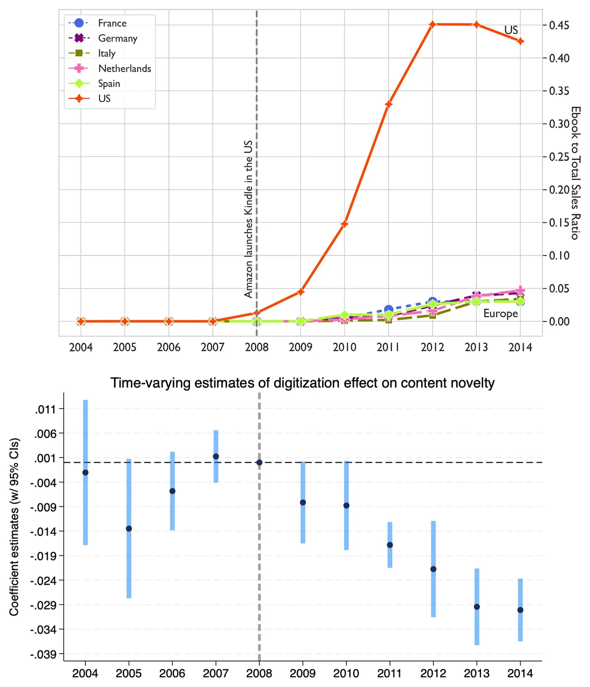
Fig. Diffusion and estimates of content novelty over time. Original
Management Science Reject & resubmit
Sequential Music Consumption Behavior
Abhishek Deshmane, Noah Askin, Khwan Kim & Yewon Kim
Listening sequences, reference effects and engagement with music.
SSRN
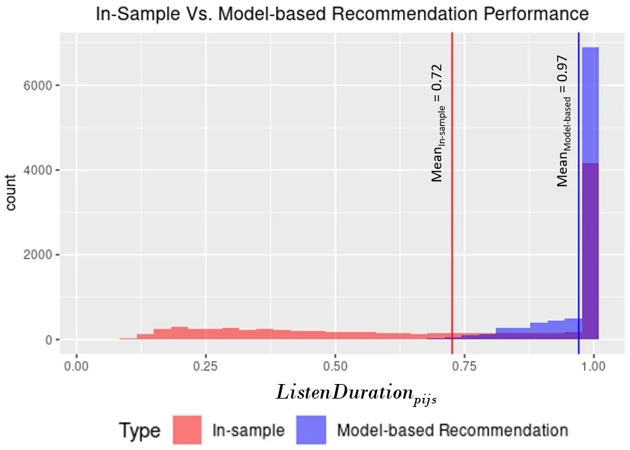
Fig. In-sample versus model-based recommendation performance. Original
Psychological Science Revise & resubmit
Emotion Expression and Status Dynamics
Eric Luis Uhlmann, Khwan Kim , et al.
Emotional expression and the dynamics of social status.
Works in progress
The Effect of Virality on Performance and Creativity in the Music Industry
With Manav Raj
SSRN
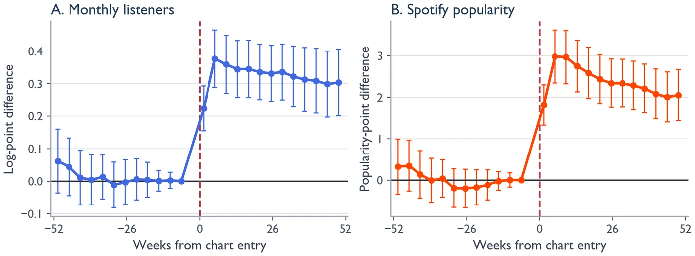
Fig. Monthly listeners and popularity around viral chart entry. Original
The Architecture of Modern Friendship: Case of Social Dining on TimeLeft
With Raina Brands
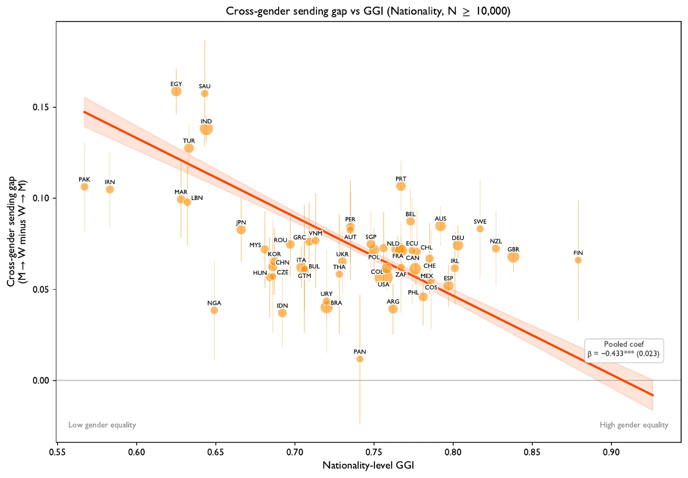
Fig. Gender equality and the gender gap in sending likes after social dinners. Original
The Career Arc of Unconventionality in Popular Music
With Sameer B. Srivastava
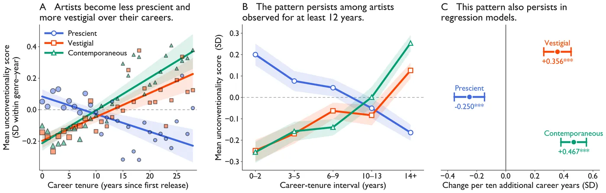
Fig. Prescient, vestigial and contemporaneous unconventionality across careers. Original
Cross-National Collaboration and Performance in U.S. Popular Music
With Exequiel Hernandez, Andrew Carton and Noah Askin
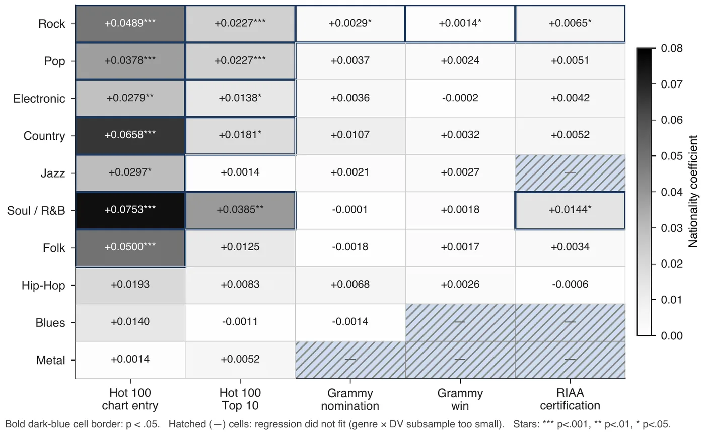
Fig. Collaboration coefficients by genre and outcome. Original
Symbolic Capital in the Global Art Market Is Facilitated by Culturally Close Diversification
With Frederic Godart and William Maddux
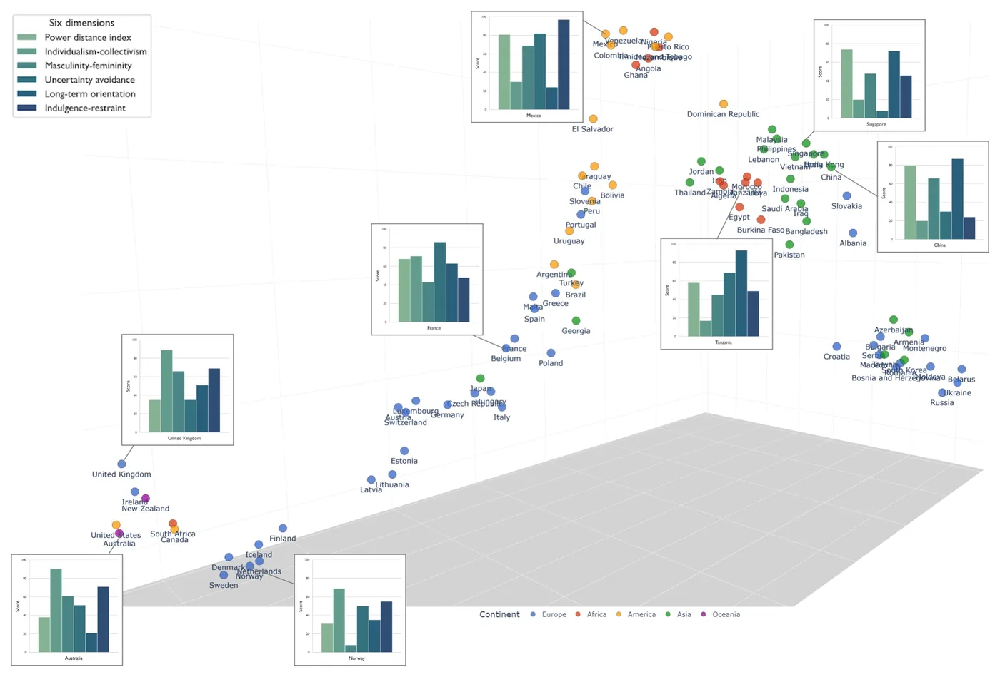
Fig. Exhibition trajectories and cultural distance. Original
Evolutionary Consecration for Cult Films: Acceptance and Attention to Deviants in the US Film Market
With Spencer Harrison and Yanbo Song
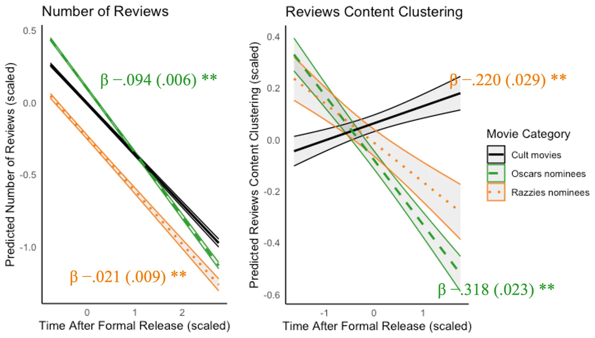
Fig. Review attention and clustering for cult films, Oscar and Razzie nominees. Original
The Collapse and Reconstruction of Relational Boundaries in Musicians: The Case of Break-up Albums
With Spencer Harrison, Akshita Joshi and Noah Askin
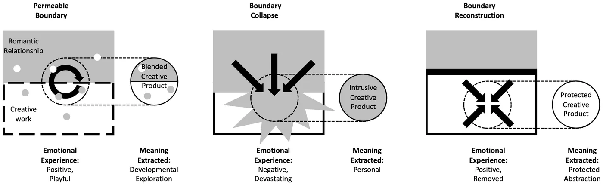
Fig. Permeable boundaries, collapse and reconstruction. Original
Market Intermediaries as Gatekeepers of Domain Originality: The Case of Broadway Musicals
With Xuege C. Lu and Heeyon Kim
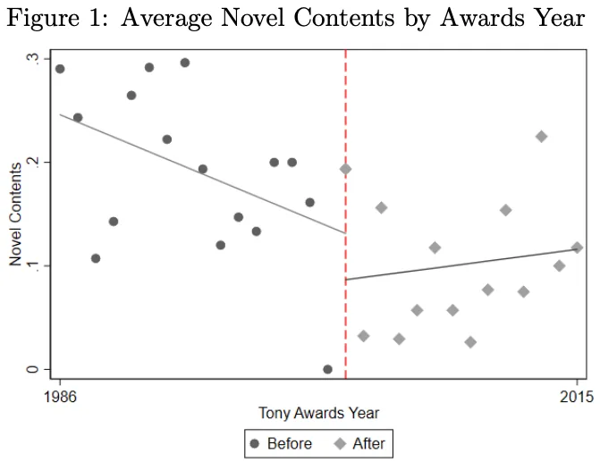
Fig. Novel content around an awards rule change. Original
Attractiveness and Occupations: A Historical Word Embedding Analysis
With Kelly A. Nault, Marko Pitesa and Stefan Thau
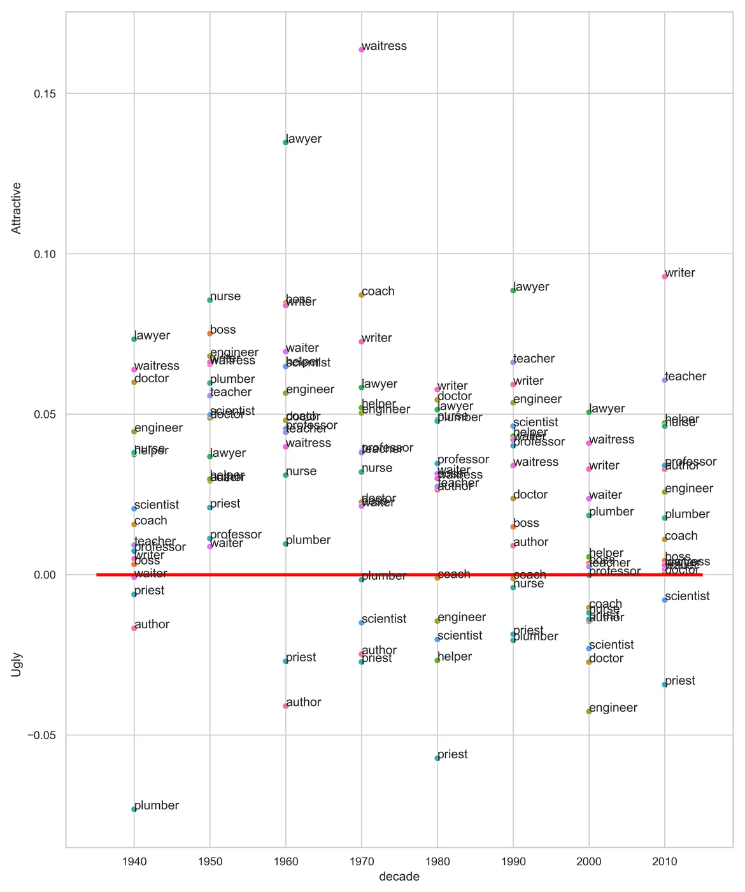
Fig. Occupations by decade in a historical word embedding. Original
Figures are shown in their original colours. Each preview links to the full-resolution source.
Teaching
2026– Creativity and Creative Industries UCL · Instructor
2025– Data Visualisation UCL · Instructor
2025– Social Network Analysis with Python INSEAD & UCL · Instructor
2021–22 Programming and Computational Social Sciences with Python INSEAD · Instructor
2023 Organizational Behavior INSEAD · Teaching Assistant
For course, research or supervision enquiries, email me with a brief description of your interests.
Appointments & education
2025– Assistant Professor UCL School of Management · Organisations & Innovation
2025 PhD in Management INSEAD
2018 MA in Sociology University of Chicago
Full academic CV (PDF)
Talks & service
Invited seminars & talks
2026
Stockholm School of Economics
University of Groningen
University of Amsterdam
2024
UCL School of Management (Organisations & Innovation)
London Business School (Strategy & Entrepreneurship)
Melbourne Business School (Management)
Harvard Business School (Organizational Behavior)
Stockholm School of Economics (House of Innovation)
SKEMA Business School (Knowledge, Technology, & Organisation)
HEC Paris (Management & Human Resources)
Warwick Business School (Entrepreneurship & Innovation)
Conference presentations
2025
Academy of Management Annual Meeting, Copenhagen, Denmark
Munich Summer Institute, Munich, Germany
2024
Berkeley Culture Conference, UC Berkeley, USA
SEI Consortium @ ESSEC, Paris, France
Creativity Collaboratorium @ UCL, London, UK
Creative Industries Conference @ University of Edinburgh, Scotland
Doriot Entrepreneurship Conference @ INSEAD Abu Dhabi, UAE
Academy of Management Annual Meeting, Chicago, USA
2023
Wharton-INSEAD Doctoral Consortium, Singapore
SMS Annual Meeting, Toronto, Canada
Creative Industries Conference @ INSEAD, Fontainebleau, France
Academy of Management Annual Meeting, Boston, USA
Strategy Science Conference @ LMU, Munich, Germany
Ad-hoc reviewing
Administrative Science Quarterly; American Journal of Sociology; Poetics; INFORMS / Organization Science Best Dissertation Proposal Competition.